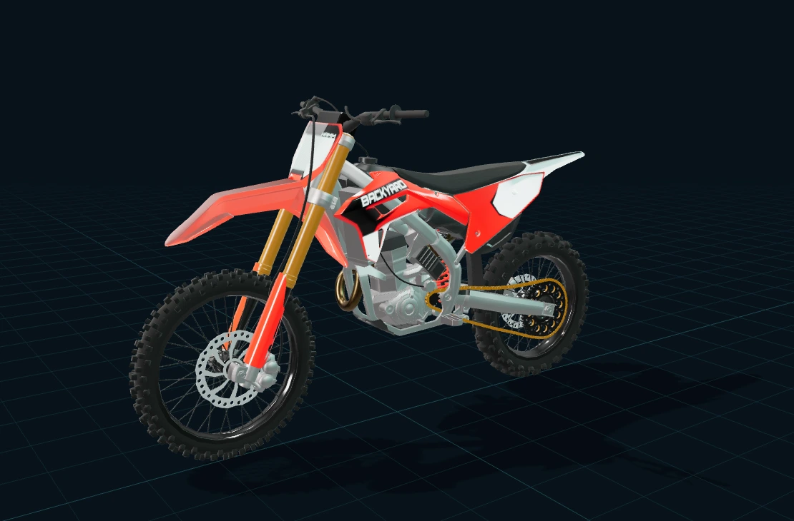

01 / OrbitLocal model preview
Drag to orbit. Pinch or scroll to inspect.
Loading the motorcycle…
AssembledExploded study
Gesture travel controls model edits. It does not measure physical force or a real component’s failure load.
From mechanism to information
Capture what happened.
Keep the unknowns.
The action record preserves the selected assembly, contact point when available, edit type, sequence and time. Those are the information-design questions behind Mechanism-to-Medical Center: what was observed, by whom, when, and what still needs establishing?
This first study concerns the machine. The deformations and release distances are authored visual behavior. There is no material solver, rider model, calibrated force sensor, injury prediction, medical imaging result or recovery estimate.